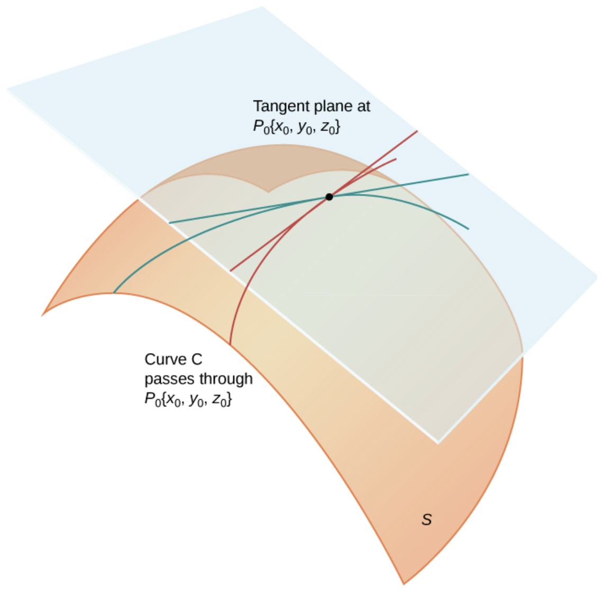

Section3.5Local linearization and differentiability
SubsectionTangent planes and scalar local linearization
SubsubsectionLinear approximations and differentiability
Recall that the linear approximation of a function \(f: \R \to \R\) of one variable at some point \(a\) is the affine function \(L(x) = f(a) + f'(a) (x - a)\text{,}\) and this function gives the best local affine approximation of \(f\) near \(a\text{.}\) Similarly, the partial derivatives of a function can be used to define a local approximation to a function of several variables. This leads to Definition 3.5.1.
Given a scalar-valued function \(f\text{,}\) and a point \(\mathbf{a}\) in the domain of \(f\) where the partial derivatives of \(f\) are well-defined, the linear approximation of \(f\) at the point \(\mathbf{a}\) is the affine function
The approximation is affine in \(\mathbf{x}\text{;}\) its linear part is the map \(\mathbf{h} \mapsto (\nabla f)(\mathbf{a})^T\mathbf{h}\) on small input changes.
where \(L(x) = f(a) + f'(a)(x - a)\) is the linear approximation of \(f\) at \(a\text{.}\) A function of several variables is differentiable when the same property holds, with the linear approximation given by the partial derivatives of the function.
is the linear approximation of \(f\) at \(\mathbf{a}\text{.}\) A vector-valued function is differentiable at a point precisely when each of its component functions is differentiable at that point.
can only hold if \(L\) is a good linear approximation of \(f\) near \(\mathbf{a}\text{,}\) so that the magnitude of the numerator is much smaller than the magnitude of the denominator when \(\mathbf{x}\) is near \(\mathbf{a}\text{,}\) i.e., when \(\| \mathbf{x} - \mathbf{a} \|\) is small.
Theorem3.5.4.Continuity of First Partials Implies Differentiability.
Let \(f\) be a scalar-valued function, and suppose \(\mathbf{a}\) is an interior point (recall Definition 3.2.9) of the domains of \(f\) and its partial derivatives. Moreover, suppose that all of the partial derivatives \(D_1 f, \dots, D_n f\) are continuous at \(\mathbf{a}\text{.}\) Then \(f\) is differentiable at \(\mathbf{a}\text{.}\)
Recall Definition 2.2.5, which specifies a plane via an equation of the form \(\mathbf{n} \cdot (\mathbf{x} - \mathbf{x}_0) = 0\text{,}\) where \(\mathbf{n}\) is a vector normal to the plane, and \(\mathbf{x}_0\) is a point on the plane. We can take \(\mathbf{x}_0 = (1,1,-2)\text{.}\) In order for \(\mathbf{n}\) to be the normal vector to the plane containing \(L_1\) and \(L_2\text{,}\) it must be perpendicular to the two direction vectors \((2,3,1)\) and \((-3,1,4)\text{,}\) i.e., we must have \(\mathbf{n} \cdot (2,3,1) = \mathbf{n} \cdot (-3,1,4) = 0\text{.}\) If we write \(\mathbf{n} = (a,b,c)\text{,}\) then expanding these dot products gives a homogeneous system
\begin{align*}
2a + 3b + c \amp = 0 \\
-3a + b + 4c \amp = 0 \text{.}
\end{align*}
Let’s convert the left hand side to matrix form, i.e., writing the homogeneous system as
\begin{equation*}
\begin{bmatrix} 2 \amp 3 \amp 1 \\ -3 \amp 1 \amp 4 \end{bmatrix} \begin{bmatrix} a \\ b \\ c \end{bmatrix} = \mathbf{0}\text{.}
\end{equation*}
Recalling Homogeneous systems and basic solutions, we solve this homogeneous system by performing row operations to the matrix on the left hand side, from which we obtain that
This row reduction tells us that the homogeneous system above is equivalent to the system
\begin{align*}
a - c \amp = 0\\
b + c \amp = 0\text{.}
\end{align*}
Setting \(c = 1\) gives a normal vector \(\mathbf{n} = (1,-1,1)\text{,}\) and any solution to the homogeneous equation is a scalar multiple of this vector (recalling terminology from Definition 2.2.36, it is a basic solution). Thus the equation
Let \(S\) be a surface, and \(\mathbf{x}_0\) a point on \(S\text{.}\) A tangent plane to \(S\) at \(\mathbf{x}_0\) is a plane that contains the tangent lines of any differentiable curve contained in \(S\) as it passes through \(\mathbf{x}_0\text{.}\)

A curved orange surface \(S\) is shown with a translucent blue plane touching it at the labeled point \(P_0(x_0,y_0,z_0)\text{.}\) Several colored curves pass through \(P_0\) on the surface, and straight tangent lines through the same point lie in the plane. The drawing emphasizes that all tangent directions to curves through \(P_0\) sit inside the tangent plane.
Suppose \(S\) is the graph of a function \(f(x,y)\) which is differentiable at a point \((x_0,y_0)\text{.}\) Then the tangent plane to \(S\) exists, is unique, and is described by the equation
\begin{equation*}
z - f(x_0,y_0) = f_x(x_0,y_0) ( x - x_0 ) + f_y(x_0,y_0) (y - y_0)\text{.}
\end{equation*}
Note that this plane is the graph of the linear approximation \(L\) to \(f\) at \((x_0,y_0)\text{.}\)
We verify that the plane described by the equation above is the only possible tangent plane. Recall from Theorem 3.4.5 that the curve obtained by the intersection of \(S\) with the plane \(y = y_0\) has slope \(f_x(x_0,y_0)\) at the point \((x_0,y_0)\text{,}\) and the tangent line to the curve at this point is by a line with direction vector \((1, 0, f_x(x_0,y_0))\text{.}\) Similarly, the curve obtained by the intersection of \(S\) with the plane \(x = x_0\) has slope \(f_y(x_0,y_0)\text{,}\) and so the tangent line to the curve at this point is a line with direction vector \((0,1,f_y(x_0,y_0))\text{.}\) But now using the method of Activity 3.5.2, we see that a normal vector to the plane containing these two lines is of the form \(\mathbf{n} = (-f_x(x_0,y_0),- f_y(x_0,y_0),1)\text{.}\) So the tangent plane to \(S\) at \((x_0,y_0,f(x_0,y_0))\) must be described by the equation
\begin{equation*}
(-f_x(x_0,y_0),- f_y(x_0,y_0),1) \cdot ( x - x_0, y - y_0, z - f(x_0,y_0) ) = 0\text{,}
\end{equation*}
an equation we may rearrange to read
\begin{equation*}
z - f(x_0,y_0) = f_x(x_0,y_0) ( x - x_0 ) + f_y(x_0,y_0) ( y - y_0 )\text{.}
\end{equation*}
The surface is the graph of the equation \(f(x,y) = e^x \cos y\text{,}\) so we may use Theorem 3.5.7 to find the equation of the tangent plane. First, we calculate that
\begin{equation*}
f_x(x,y) = e^x \cos y \quad\text{and}\quad f_y(x,y) = - e^x \sin y
\end{equation*}
so \(f_x(0,\pi/2) = e^0 \cos(\pi/2) = 0\) and \(f_y(0,\pi/2) = - e^0 \sin(\pi/2) = -1\text{.}\) This means that an equation describing the tangent plane is given by
\begin{equation*}
z - 0 = 0 (x - 0) + (-1) ( y - \pi/2 )
\end{equation*}
which simplifies to
\begin{equation*}
z + y = \pi/2\text{.}
\end{equation*}
\(\mathbf{x}\mapsto F(\mathbf{a})+J_F(\mathbf{a})(\mathbf{x}-\mathbf{a})\) is affine in \(\mathbf{x}\text{.}\)\(\mathbf{h}\mapsto J_F(\mathbf{a})\mathbf{h}\) is the linear map on input changes.
Linear algebra gave us global linear maps \(\mathbf{x}\mapsto A\mathbf{x}\text{.}\) Calculus gives us local linear maps \(\mathbf{h}\mapsto J_F(\mathbf{a})\mathbf{h}\text{.}\) The same matrix language therefore reappears inside nonlinear problems.
Definition3.5.8.Linear Approximation of Vector-Valued Functions.
Let \(F: \R^n \to \R^m\) be a vector-valued function. Provided that the partial derivatives of the components of \(F\) all exist at \(\mathbf{a}\text{,}\) so that the Jacobian matrix \(J_F\) is well-defined, the linear approximation of \(F\) at \(\mathbf{a}\) is the vector-valued affine function
where \(J_F(\mathbf{a}) (\mathbf{x} - \mathbf{a})\) is the Jacobian matrix of \(F\) evaluated at \(\mathbf{a}\text{,}\) and then applied to the vector \(\mathbf{x} - \mathbf{a}\text{.}\) The approximation is affine in \(\mathbf{x}\text{;}\) its linear part is the map \(\mathbf{h} \mapsto J_F(\mathbf{a})\mathbf{h}\) on small input changes.
The components of \(L\) are precisely the linear approximations of the components of \(F\text{,}\) i.e., \(L_i(\mathbf{x}) = F_i(\mathbf{a}) + (\nabla F_i)(\mathbf{a})^T(\mathbf{x} - \mathbf{a})\text{.}\)
Geometrically, the graph of the linear approximation to a vector-valued function can be visualized as a higher dimensional “tangent plane” of the graph of the function \(F\) at \(\mathbf{a}\text{.}\)
Let \(F(x,y) = ( x^2y, xe^y )\text{.}\) Find the linear approximation of \(F\) at the point \((1,0)\text{,}\) and use it to approximate \(F(1.1, -0.2)\text{.}\)
If \(0 \leq h_2 \leq r\text{,}\) then \(0 \leq h_2^2 \leq r^2\text{.}\) As the square around \(\mathbf{a}\) shrinks, the nonlinear image and the local linear image become closer.
A colored input grid centered at \(\mathbf{a}=(0,1/2)\) with radius \(r=0.25\) is shown above its nonlinear image and its local linear image. The nonlinear image visibly bends away from the local linear image.
Figure3.5.11.Local square-grid visualization near \(\mathbf{a}=\begin{bmatrix}0\\1/2\end{bmatrix}\) for the larger input square \(r=0.25\text{.}\) The three panels show the input grid, the nonlinear image, and the local linear image on ticked axes.
A colored input grid centered at \(\mathbf{a}=(0,1/2)\) with radius \(r=0.1\) is shown above its nonlinear image and its local linear image. The nonlinear and local linear images are closer than for the larger square.
Figure3.5.12.Local square-grid visualization near \(\mathbf{a}=\begin{bmatrix}0\\1/2\end{bmatrix}\) for the smaller input square \(r=0.1\text{.}\) The nonlinear image is closer to the local linear image than in the larger-square visualization.